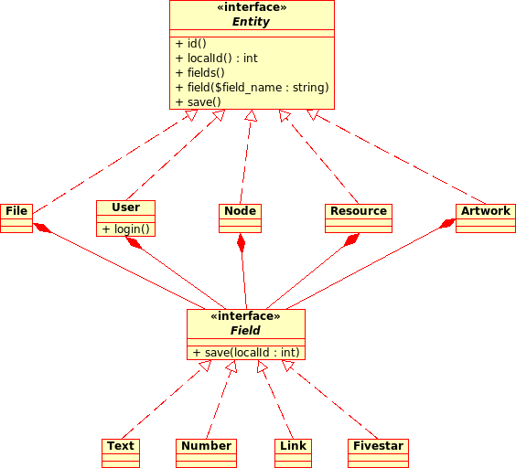
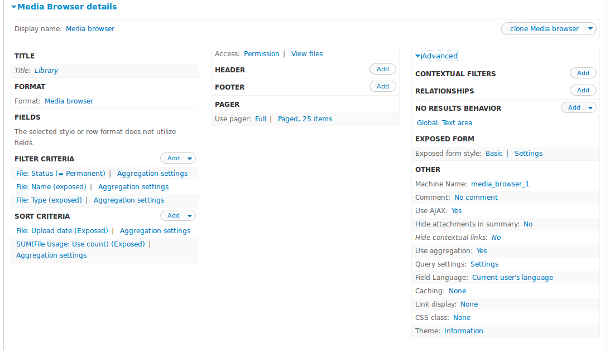
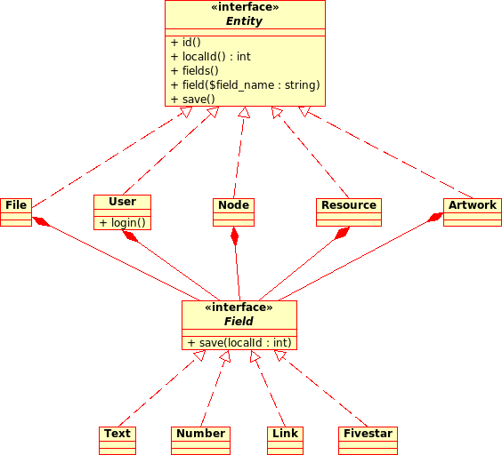
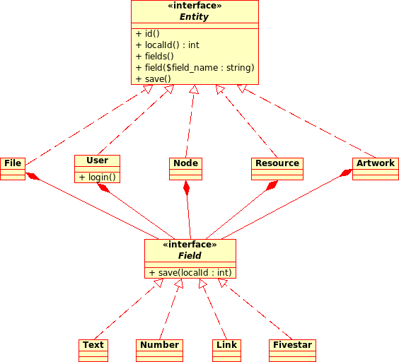

Drupal 8 FTW!
A journey in the world of the Drop
Janez Urevc
/
@slashrsm

Entities and fields
Views

Other sweet parts of the drop
image styles - image processing
security
SEO friendly
commerce
multilingual
layout configuraton
3rd party integrations
webforms
Thank you!
Janez Urevc
/
@slashrsm

 
